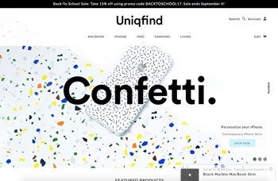
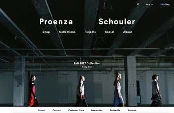

Website Comparison by Hazuki Uno
A Successful Website
Uniqfind is one of my favorite sites because of its good usability. First of all, the site is easy to figure out what it is about and what they sell. It is overall very efficient and easy to use for any kind of users by having a simple and clear menu bar and contents. Its accessibility is one of the successful elements, because it is very easy to find the product the customer want to shop, and it easily leads the customer to whatever they want to see. There are not many errors that stand out when using the site. The design of the website is visually pleasing with a lot of white spaces and very simple with the organized design which is essential for online shopping sites. They use image icons like ‘cart’ and ‘account’ to make the site easy for any users to use. Also, it uses many images to catch user’s attention as well as making it easy to use. The site could also be used for any size of devices like phones or tablets. Another successful element is that when scrolling the site, the image appears fast and smooth. Overall, Uniqfind is a simple and organized design which makes it user-friendly and this is why I think this website is one of the successful websites.

A Less Successful Website
Proenza Schouler is one of the websites I think is less successful. The website is easy to figure out what kind of brand they are and the shopping site is fairly easy to use for any kind of users. However, this website is not capable of devices like phones because when the scale change some of the letters hides behind the images or the image gets cut off, and the customer needs to scroll all the way up when they want to go back to the home page of the website. Also when the scale changes, a white space appears on the top of the site or an image becomes all white which can be confusing for the users. Some of the organization of the site is confusing for first-time users, for instance, the ‘Collection’ section has looks from runway show but also has images of accessories. This is confusing because there are not many captions, so the whole page is continuous and there are no separations between different elements. Also, there are some errors when scrolling the site, for instance, when scrolling down there is a bouncy movement, also when scrolling down fast, it skips all the content on the page. These elements are distracting for the users and less successful for a website. On this site, there are some errors such as some letters become question marks on the page. Adding to it, the text is hard to see on the site because of its layout of images overlapping text. As a whole, the site has not many white spaces, so it’s very visually busy for the users. Overall, Proenza Schouler's website could be confusing for the users and some mistakes could be spotted easily, therefore it has low usability.
